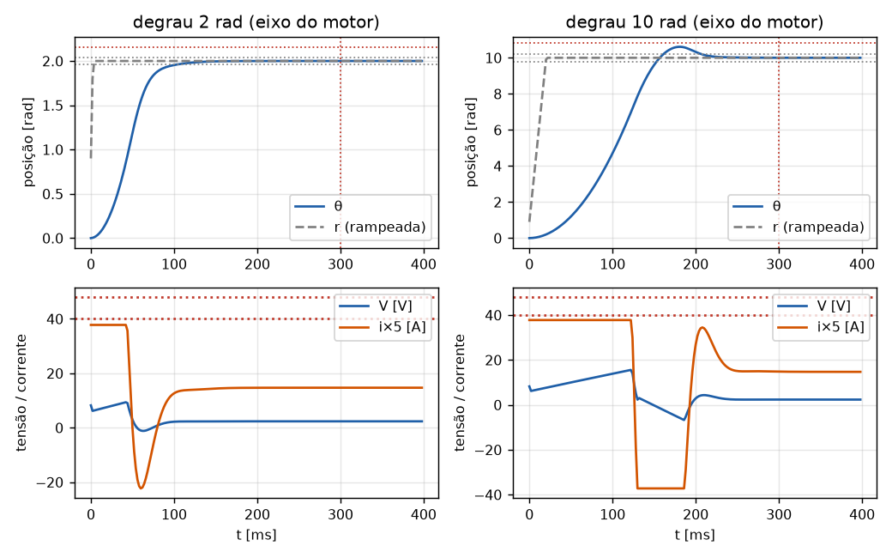
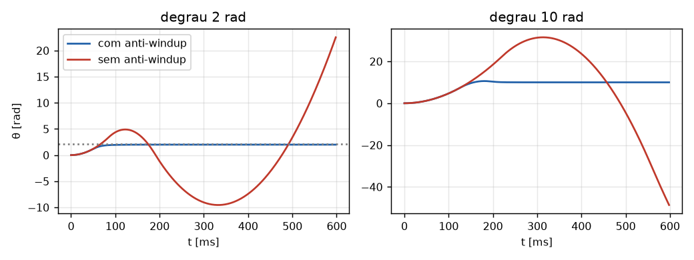
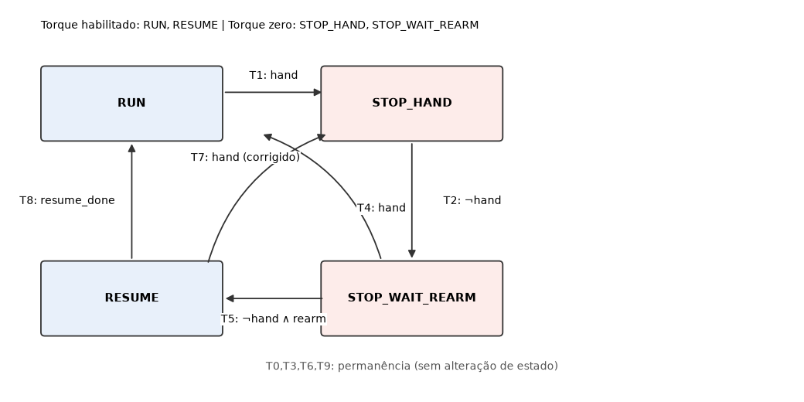
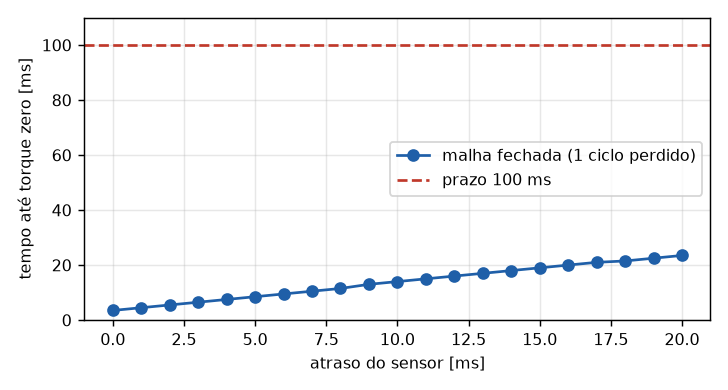
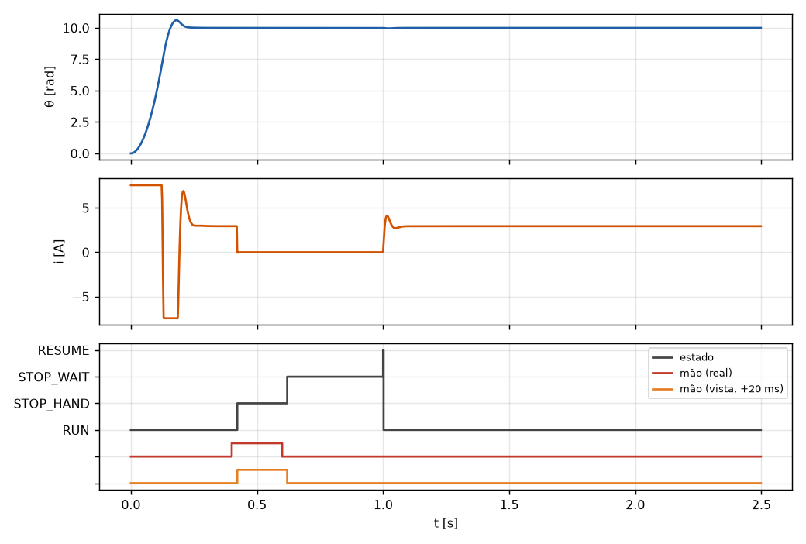
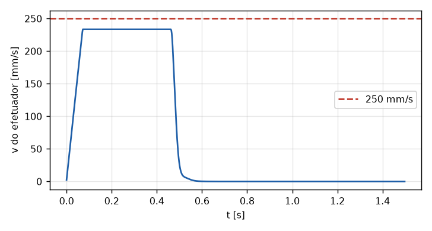
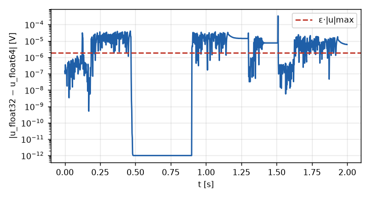

Para a junta do cotovelo (motor CC 48 V, redução 100:1) foram entregues: (i) o modelo em espaço de estados derivado das leis de Kirchhoff e Newton (src/plant.py); (ii) um controlador de realimentação de estados com ação integral, limitador preditivo de tensão/corrente e anti-windup (src/design.py, src/controller.py); (iii) um supervisor de segurança formalizado como autômato e verificado exaustivamente por um model checker de estados explícitos temporizado (src/supervisor.py, src/modelcheck.py); e (iv) código C em ponto flutuante simples gerado automaticamente (generated/aurora_joint_ctrl.c), com suíte de 16 testes, equivalência numérica e matriz de rastreabilidade (docs/traceability.md).
| Número-chave | Valor | Origem |
|---|---|---|
| Constantes de tempo (elétrica / mecânica) | 1,55 ms / 44,2 ms (separação 28,5×) | Memorial (a) |
| Tensão e corrente exigidas em 450 rad/s, 0,25 N·m | 41,24 V (folga 6,76 V = 14,1%) e 3,74 A (folga 53%) | Memorial (b) |
| Amostras por constante de tempo mecânica | 22,1 (Ts = 2 ms adequado) | Memorial (c) |
| Desempenho (degrau 2 rad / 10 rad no eixo do motor) | sobressinal 0% / 6,1%; acomodação 104 ms / 208 ms; erro nulo | TC-CTRL-001..003 |
| Prazo de torque zero (REQ-SAFE-AA-001) | pior caso 25 ms (checker, J=1) e 25,5 ms (malha fechada) < 100 ms; tolera até 39 ciclos perdidos | Memorial (d) |
| Velocidade do efetuador na zona colaborativa | pico 241,6 mm/s < 250 mm/s | TC-SAFE-004 |
| Equivalência modelo (float64) × código (float32) | erro máx. 3,4·10-4 V ≈ 2,6 ε·Σ|termos| | Memorial (e) |
.c), e a compilação/execução do C real ainda não foi realizada — o harness (generated/sil_main.c, src/sil.py) está pronto e fecha o SIL assim que houver gcc/clang. A verificação formal usa um model checker próprio em Python, e não UPPAAL/NuSMV. Ver seção 7.A armadura obedece à lei das malhas de Kirchhoff e o eixo à segunda lei de Newton para rotação:
Os estados são x = [i, ω] (e θ adicionado no laço de posição) porque cada um é uma variável de energia armazenada: i na indutância (½Li²), ω na inércia (½Jω²), θ é a integral que fecha o laço de posição. A tensão V é a entrada, Tc é perturbação e as saídas são ω (memorial) ou θ (controle). O acoplamento eletromecânico (Keω no circuito, Kti no eixo) é o que torna os dois estados interdependentes e faz a constante de tempo mecânica efetiva (45,7 ms) ser muito menor que J/b = 2,8 s. Código: continuous2() e continuous3() em src/plant.py.
Identificação e validação. Os parâmetros foram identificados em bancada (dados do enunciado); não há dados brutos de ensaio nesta entrega, logo a "validação" é de consistência: (i) Kt = Ke em unidades SI, como esperado para ímã permanente; (ii) τm calculada por dois caminhos (autovalor 44,2 ms e fórmula JR/(Rb+KtKe) = 45,7 ms, diferença de 3% devida ao acoplamento de L); (iii) o torque estático do payload (2 kg × 9,81 × 0,35 m ÷ 100 = 0,069 N·m) é 3,6× menor que os 0,25 N·m do enunciado — adotei os 0,25 N·m como valor conservador (inclui efeitos dinâmicos/atrito não modelados). Com dados reais, a validação adequada seria comparar o degrau de tensão medido com a simulação e reportar o NRMSE.
Os REQ-CTRL são requisitos quantitativos sobre trajetórias contínuas (sobressinal, acomodação, erro de regime), verificados por simulação em cenários representativos: a evidência é finita e depende da escolha dos cenários. Os REQ-SAFE são propriedades lógico-temporais sobre todas as execuções de um sistema reativo discreto (supervisor + sensor + escalonador); testes não bastam porque o defeito do quase-acidente era uma condição de borda rara — por isso usam-se model checking (exaustivo) e testes derivados do modelo.
| Requisito | Classe | Justificativa | Formalização |
|---|---|---|---|
| REQ-SAFE-AA-001 (torque zero ≤ 100 ms) | Segurança (com prazo) | "Algo ruim nunca acontece": nunca ocorre mão <500 mm por >100 ms com torque ativo. É refutável por um prefixo finito (o instante em que o prazo vence), logo é segurança; o prazo a transforma em uma resposta limitada, não em vivacidade. | AG ¬(c > 100 ∧ torque), c = relógio de presença da mão |
| REQ-SAFE-AA-002 (sem retomada automática) | Segurança | Nunca se sai de STOP para movimento sem rearme explícito. Violação = um único passo. | AG (STOP ∧ X(RESUME) → rearme ∧ ¬mão) |
| REQ-SAFE-AA-003 (retomar a trajetória) | Vivacidade | "Algo bom eventualmente acontece": após mão removida e rearme, o braço eventualmente retoma. Nenhum prefixo finito a refuta (sempre pode-se esperar mais); exige premissa de justiça (a mão não retorna). Fortalecida com limite RESUME_MAX = 50 ciclos, o que a torna vivacidade limitada. | AG ((STOP_WAIT ∧ rearme ∧ ¬mão) → AF RUN) sob "mão não volta" |
| REQ-SAFE-AA-004 (v ≤ 250 mm/s) | Segurança (invariante) | Violação num único instante. Valor crítico: 450 rad/s no motor = 1,575 m/s no efetuador (0,35 m), 6,3× acima do limite; logo a zona colaborativa exige limitar ω a 0,95·0,25/0,35·100 = 67,9 rad/s. | AG v(ω) ≤ 250 mm/s em zona colaborativa |
Controle (Unidades 1–2). Optou-se por realimentação de estados com integrador projetada por LQR discreto sobre o modelo ZOH exato (Ts = 2 ms), em vez de PID: com i, ω e θ medidos, o LQR posiciona todos os polos de forma coordenada, e o integrador de θ garante erro nulo sob torque de carga constante (REQ-CTRL-001; Siciliano et al., 2010, cap. 8). Como Ts > τe, um projeto em tempo contínuo discretizado ignoraria a dinâmica elétrica — por isso projeta-se direto em tempo discreto. Pesos: Q = diag(0; 10-3; 2000; 5·106), R = 1, escolhidos por varredura (36 combinações) até 0% de sobressinal e menor acomodação. Polos de malha fechada em |z| = 0,275; 0,863 (duplo); 0,906.
Saturação e windup. O limite de 8 A é muito menor que a corrente de rotor bloqueado (48/0,8 = 60 A), logo a saturação é o regime normal em qualquer manobra rápida. Dois mecanismos: (1) limitador preditivo que calcula o intervalo de u que mantém |V| ≤ 48 V e |i[k+1]| ≤ 7,5 A (margem de 0,5 A para ondulação intra-amostra) e |ω[k+1]| ≤ ωcolab na zona colaborativa; (2) anti-windup por back-calculation, z ← z + Tse + (Ts/Tt)(uraw − usat)/Kz, Tt = 10 ms. Sem ele, o degrau de 2 rad tem 1026% de sobressinal (Figura 2).
Verificação (Unidade 3). O supervisor é um autômato de 4 estados (Figura 3) e o sistema verificado é o produto temporizado ambiente × sensor × escalonador × supervisor × atuação (Baier e Katoen, 2008, caps. 4–6 e 9, para a semântica temporal): relógios inteiros com tick de 1 ms, atraso do sensor não determinístico em [0, 20] ms, até J ciclos perdidos e Z = 2 ms para a corrente zerar (medido em simulação). Responde-se a P1 por busca em largura (alcançabilidade do estado ruim), a P2 por checagem de invariante de transição e a P3 por ponto fixo de AF em CTL sobre o grafo restrito à premissa de justiça. A norma IEC 61508 motiva a abordagem: métodos formais são recomendados para SIL 3/4, e a ISO/TS 15066 define as grandezas (velocidade, separação).
Geração de código (Unidade 4). src/codegen.py emite C a partir do mesmo modelo: ganhos e matrizes saem de design(), a máquina de estados reproduz supervisor.TRANSITIONS e o cabeçalho traz o bloco de rastreabilidade e o hash SHA-256 dos parâmetros. Escolhas: float (FPU de precisão simples do Cortex-M4), sem alocação dinâmica, sem recursão, sem libm, laços de tamanho fixo (compatível com análise estática tipo MISRA C). Orçamento: ≈60 operações de ponto flutuante por ciclo; estimativa de 300–600 ciclos em M4F a 100+ MHz ≈ 3–6 µs ≪ 200 µs e poucas centenas de bytes de código ≪ 256 KB — estimativa, não medição.

tests/test_aurora.py::test_perf).| Teste | Requisito | Critério | Resultado |
|---|---|---|---|
| TC-CTRL-001 | REQ-CTRL-AA-001 | erro de regime nulo | 1,2·10-12 rad (2 rad); 6,5·10-10 rad (10 rad) — PASS |
| TC-CTRL-002 | REQ-CTRL-AA-002 | sobressinal ≤ 8% | 0% (2 rad); 6,08% (10 rad) — PASS |
| TC-CTRL-003 | REQ-CTRL-AA-003 | acomodação (2%) ≤ 300 ms | 104 ms; 208 ms — PASS |
| TC-CTRL-004 | REQ-CTRL-AA-004 | |V| ≤ 48 V, |i| ≤ 8 A | Vmáx = 29,3 V; imáx = 7,59 A (5 degraus de 0,5 a 50 rad, corrente intra-amostra com 20 sub-passos) — PASS |
| TC-CTRL-005 | REQ-CTRL-AA-002 | anti-windup | com AW 0%; sem AW 1026% — PASS |
Envelope declarado. Os requisitos são garantidos para degraus de até 10 rad no eixo do motor (≈ 5,7° na junta). Para 50 rad o sobressinal sobe a ≈ 22% e a acomodação passa de 300 ms (limitada pelos 8 A); movimentos maiores devem passar pelo gerador de trajetória (rampa de referência), que o código implementa.


src/supervisor.py). Torque zero nos estados STOP_*; a transição T7 foi a corrigida.Contraexemplo obtido e corrigido. A versão preliminar (step(..., buggy=True)) reproduz o quase-acidente: em RESUME o sinal hand era ignorado (condição de borda movimento/parada). O model checker refutou P1 com um contraexemplo de 105 ticks (125.365 estados explorados): a mão aparece, some, o operador rearma, a mão reaparece enquanto o estado é RESUME, o supervisor a ignora e o torque permanece ativo com a mão presente por 101 ms. Após a correção (T7: hand tem prioridade em todos os estados) P1 passa. Essa mesma suíte, executada sobre o mutante, falha na transição T7 (TC-MBT-003), demonstrando poder de detecção.
| Propriedade | J (ciclos perdidos) | Estados / transições | Resultado |
|---|---|---|---|
| P1 (REQ-SAFE-001) | 0 | 46.329 / 264.808 | satisfeita, pior caso 23 ms |
| P1 | 1 | 99.845 / 745.453 | satisfeita, pior caso 25 ms |
| P1 | 2 | 153.929 / 1.257.205 | satisfeita, pior caso 27 ms |
| P1 | 3 | 208.565 / 1.796.842 | satisfeita, pior caso 29 ms |
| P2 (REQ-SAFE-002) | 0–3 | idem | satisfeita (RESUME só via T5) |
| P3 (REQ-SAFE-003, AF) | 1 | 209 (subgrafo) | satisfeita: 4 estados antecedentes, 0 violações |

generate_paths() em tests/test_aurora.py percorre por BFS o grafo do supervisor sobre o alfabeto (hand, rearm, resume_done) e gera o menor prefixo que exercita cada transição. Cobertura: 4/4 estados e 10/10 transições (T0–T9), mais um caso direto de saída de RESUME por timeout (49 repetições de T9 e depois T8). Os mesmos caminhos rodam no modelo float64 e no espelho float32 com as mesmas transições (TC-MBT-002). Testes de malha fechada: TC-SAFE-001 varre 21 atrasos × 4 fases × 3 padrões de ciclos perdidos (252 combinações) a partir do ponto crítico: pior caso 25,5 ms (atraso 20 ms, fase 0,5 ms, 2 ciclos perdidos).


| Requisito | Modelo | Código gerado | Teste(s) |
|---|---|---|---|
| REQ-CTRL-AA-001 | src/plant.py, src/design.py (integrador z) | generated/aurora_joint_ctrl.c: aa_joint_step(), c->z | TC-CTRL-001 |
| REQ-CTRL-AA-002 | src/design.py (LQR, anti-windup) | AA_K_*, AA_KAW | TC-CTRL-002, 005 |
| REQ-CTRL-AA-003 | src/design.py | AA_K_* | TC-CTRL-003 |
| REQ-CTRL-AA-004 | design.limits(), controller.py | limitador lo/hi, AA_VMAX, AA_IMAX_EFF | TC-CTRL-004, TC-EQV-001 |
| REQ-SAFE-AA-001 | supervisor.py T1,T4,T7; modelcheck.py P1 | transições para AA_STOP_HAND; corrente-zero | TC-SAFE-001, 001-MC, TC-MBT-001/003 |
| REQ-SAFE-AA-002 | supervisor.py T2,T3,T5,T6; P2 | case AA_STOP_WAIT_REARM | TC-SAFE-002, 002-MC, TC-MBT-001 |
| REQ-SAFE-AA-003 | supervisor.py T5,T8,T9; P3 | AA_RESUME, r_cmd | TC-SAFE-003, 003-MC, TC-MBT-001 |
| REQ-SAFE-AA-004 | params.py W_COLLAB; limitador de ω | AA_W_COLLAB | TC-SAFE-004 |
Resultado da suíte: 16 de 16 testes aprovados (results/tests.json). Versão completa e gerada automaticamente em docs/traceability.md.
A distância mínima de separação do SSM é a soma de quatro parcelas: deslocamento do humano durante TR + TS, deslocamento do robô durante TR, distância de frenagem e margem de intrusão/incertezas C. Com os resultados deste pacote (estimativa, zona colaborativa, vhumano = 1,6 m/s adotado como premissa): TR = 25,5 ms (TC-SAFE-001) e TS = ω/α = 69/607 = 0,114 s. Humano: 1600 × (0,0255 + 0,114) = 223 mm; robô na resposta: 241,6 × 0,0255 = 6,2 mm; frenagem: 13,8 mm. Soma = 243 mm + C, contra os 500 mm de detecção do REQ-SAFE-AA-001: sobram ≈ 257 mm para C e incertezas. O TR medido no caso real (113 ms) é 4,4× maior que o nosso e já estouraria o prazo de 100 ms, o que mostra que o prazo só é cumprido porque o supervisor corre no próprio laço de 2 ms, e não em um controlador externo em rede. Limitações: a frenagem aqui é por carga e atrito (sem freio) e supõe a carga se opondo ao movimento.
Caso real selecionado (fonte 7). Marvel e Norcross (2017) relatam a implementação de speed and separation monitoring (ISO/TS 15066) em uma célula colaborativa do NIST: manipulador de 6 graus de liberdade em célula protegida, com alvo humano simulado. Medições reportadas: tempo de resposta do sistema TR = 0,113 s (margem de +0,019 s para 0,999 de confiança) e atraso de ≈ 220 ms entre a posição real do robô e a posição reportada. Ressalva: é uma bancada de pesquisa, não uma linha de produção de fabricante; foi o relato técnico público que consegui verificar. A matéria da ISA sobre a Scott Fetzer com UR5/UR10 (FRANKLIN, 2017) foi descartada por ter só uma legenda sobre o caso, sem dados de segurança. O(a) estudante pode substituir por um relato de fabricante (UR, ABB, KUKA) com a mesma comparação.
src/sim.py).Repositório Git: [inserir link]. Reprodução: python run_all.py (numpy e matplotlib).
Todos os números abaixo são reproduzidos por python src/memorial.py (saída em results/memorial.json).
Fórmulas (x = [i, ω]ᵀ): A = [[−R/L, −Ke/L],[Kt/J, −b/J]], B = [1/L, 0]ᵀ, C = [0 1], D = 0.
Dados: R = 0,8 Ω; L = 1,2·10-3 H; Kt = Ke = 0,085; J = 4,2·10-4; b = 1,5·10-4.
Substituição: −R/L = −0,8/0,0012 = −666,67 s⁻¹; −Ke/L = −0,085/0,0012 = −70,83; Kt/J = 0,085/4,2·10-4 = 202,38; −b/J = −1,5·10-4/4,2·10-4 = −0,357; 1/L = 833,3.
Autovalores: det(λI−A) = λ² + 667,02λ + 14573,2 = 0 (traço = −667,02; det = 666,67·0,357 + 70,83·202,38 = 238,1 + 14335,1). Raízes: λ₁ = −644,41 s⁻¹, λ₂ = −22,62 s⁻¹ (ambos reais e negativos → estável, sobreamortecido).
Constantes de tempo: τe = 1/644,41 = 1,55 ms; τm = 1/22,62 = 44,2 ms. Razão τm/τe = 28,5 → sistema rígido (stiff): a corrente atinge o regime ≈ 28× mais rápido que a velocidade; o modelo desacoplado dá L/R = 1,5 ms e J/b = 2,8 s, mas a f.c.e.m. realimenta o eixo e reduz τm a JR/(Rb+KtKe) = 3,36·10-4/7,345·10-3 = 45,7 ms (3% de diferença do autovalor exato, por causa de L).
Controlabilidade: 𝒞 = [B AB] = [[1/L, −R/L²],[0, Kt/(JL)]]; det 𝒞 = (1/L)·Kt/(JL) = 833,3 · 1,6865·10⁵ = 1,405·10⁸ ≠ 0 → posto 2: controlável.
Observabilidade (C = [0 1]): 𝒪 = [C; CA] = [[0, 1],[202,38, −0,357]]; det 𝒪 = −202,38 ≠ 0 → posto 2: observável. (O modelo estendido [i, ω, θ] é controlável e observável por θ, posto 3 e 3.)
Premissa: parâmetros constantes e linearidade (sem zona morta, histerese ou saturação magnética).
Fórmulas: iss = (bωss + Tcarga)/Kt; Vss = R·iss + Keωss.
Substituição: iss = (1,5·10-4·450 + 0,25)/0,085 = (0,0675 + 0,25)/0,085 = 3,735 A.
Vss = 0,8·3,735 + 0,085·450 = 2,988 + 38,25 = 41,24 V.
Folga: 48 − 41,24 = 6,76 V (14,1% do barramento); em corrente, 8 − 3,735 = 4,26 A (53%). Velocidade máxima sustentável sob a mesma carga: ωmax = (48 − R·Tc/Kt)/(Ke + Rb/Kt) = (48 − 2,353)/0,08641 = 528 rad/s (17% acima de 450).
Implicação. 92% da tensão disponível (38,25 V) é f.c.e.m.; a folga de 6,76 V é o que sobra para acelerar e rejeitar perturbações — suficiente em regime, mas, na transição (partida em ω = 0, onde istall = 60 A ≫ 8 A), o atuador satura sempre em manobras rápidas. Logo, um controlador de ação integral necessita de anti-windup: sem ele o integrador acumula durante a saturação e gera 1026% de sobressinal (TC-CTRL-005). Também justifica o limitador de corrente preditivo e fixa que não se deve operar o ponto crítico com margem de tensão menor que ≈ 14%.
Fórmula: Nτ = τm/Ts. Substituição: 44,2 ms/2 ms = 22,1 amostras por τm (regra de projeto digital: 10–20 amostras por constante de tempo dominante da malha). Polos de malha fechada discretos |z| = 0,863 → τcl = −Ts/ln(0,863) = 13,6 ms = 6,8 amostras, e 0,906 → 20,3 ms = 10,2 amostras. Frequência de amostragem 500 Hz.
Conclusão: Ts = 2 ms é adequado para o laço de posição (nem insuficiente nem desnecessariamente conservador: ≥ 6,8 amostras por constante da malha fechada e ≈ 52 amostras por tempo de acomodação de 104 ms). Ressalva: τe/Ts = 0,78 (< 1 amostra por τe) — a dinâmica elétrica não é resolvida pela amostragem; por isso o projeto é feito em tempo discreto com ZOH exato (e a corrente é controlada de forma preditiva, de modo semelhante a deadbeat, polo em 0,275), e não seria adequado fechar uma malha de corrente separada a 500 Hz.
Orçamento analítico (pior caso): tpior = dsensor + Ts (espera pelo próximo ciclo) + J·Ts (ciclos perdidos) + Z = 20 + 2 + 2·1 + 2 = 26 ms, com Z = 2 ms o tempo medido para |i| ≤ 0,16 A (2% de 8 A) com comando de corrente-zero (i = 7,5 A, 450 rad/s). Folga: 74 ms.
Verificação exaustiva (autômato temporizado discreto): o checker explora todas as combinações de atraso ∈ {0..20} ms (inclusive trocas de atraso), fase do ciclo, instante de intrusão/saída da mão, ciclos perdidos (J ≤ 3), rearme e duração de RESUME. Resultado: pior caso 23, 25, 27 e 29 ms para J = 0, 1, 2, 3, ou seja, 25 ms para J = 1 (condizente com o orçamento de 26 ms — o 1 ms de diferença é a granularidade do tick), nenhuma combinação viola 100 ms.
Validação cruzada em malha fechada com a planta: 252 combinações (21 atrasos × 4 fases × 3 padrões de ciclos perdidos): pior caso 25,5 ms (atraso 20 ms, 2 ciclos perdidos). Varredura estendida de ciclos perdidos consecutivos (atraso 20 ms, pior fase): 0→21,5 ms; 5→31,5; 20→61,5; 30→81,5; 38→97,5; 39→99,5 ms; 40→101,5 ms (viola). O sistema tolera até 39 ciclos consecutivos perdidos, bem além do 1 ciclo previsto; a combinação violadora (≥ 40) está fora das premissas do enunciado.
Premissa crítica: a contagem de 100 ms inicia na entrada física da mão (conservador: inclui o atraso do sensor). O scanner é visto como binário (mão a menos/mais de 500 mm).
Fórmula: emax = maxk |ucódigo[k] − uref[k]|, comparado a εfloat32 = 2-23 = 1,19·10-7.
Sequência de teste: 1000 amostras (2 s) gravadas da malha fechada float64: degrau 10 rad → intrusão da mão com atraso de 20 ms → parada → rearme → retomada → trecho colaborativo → degrau reverso (todas as transições de estado exercitadas).
Resultado: emax = 3,41·10-4 V; |u|max = 15,56 V; emax/(ε·|u|max) = 184; erro relativo 2,2·10-5. Divergência de estados do supervisor: 0 de 1000.
Interpretação: 184 ε em relação à saída parece alto, mas a lei de controle é uma soma de termos que se cancelam: Σ|Kjxj|max = 1088 V (principalmente Kz·z), e o erro de arredondamento do float32 escala com essa soma, não com o resultado. Em relação a ela, emax/(ε·Σ|termos|) = 2,6, ou seja, poucos ulps — compatível com a aritmética de simples precisão (erro ≈ ε·Σ|termos|·O(1)) e sem evidência de defeito na geração (um defeito, como ganho trocado, teria erro de várias ordens de grandeza maior; o mutante do supervisor foi detectado com transições divergentes). Critério adotado: emax < 10-3 V e emax/(ε·|u|max) < 10³.
Ressalva importante: a comparação foi feita com o espelho float32 (sil.mirror_f32), cujas constantes são lidas de volta do .c gerado e cuja ordem de operações é igual à do código C. A execução do C compilado ainda não ocorreu (ver seção 7).

Torque zero não imobiliza o eixo. Na zona colaborativa (ω ≤ 69 rad/s): desaceleração por carga e atrito ≈ (0,25 + 1,5·10-4·34,5)/4,2·10-4 = 607 rad/s² → Δθ = 69²/(2·607) = 3,9 rad no motor = 0,039 rad na junta = 13,8 mm na ponta; mais o deslocamento durante a resposta de 25,5 ms (6,2 mm): ≈ 20 mm ≪ 500 mm de detecção, supondo que a carga se oponha ao movimento (se a gravidade ajudar, a distância cresce e um freio é necessário). Já a 450 rad/s (fora da zona colaborativa) a ponta percorreria ≈ 0,5 m em roda livre, por isso o freio mecânico e a classe de parada são decisões de projeto da célula.
Sustenta, perante a auditoria da Aurora Robótica: modelo derivado e consistente; controlador que cumpre os quatro REQ-CTRL nos cenários declarados; supervisor corrigido, com contraexemplo documentado e propriedades P1–P3 verificadas exaustivamente no modelo; código C e testes gerados do mesmo modelo, com rastreabilidade bidirecional; números reprodutíveis por run_all.py.
Não sustenta (lacunas explícitas):
-ffp-contract=off e comparar com o espelho (esperado: diferença de ≈ 0 ulp) — python src/sil.py. Também não foi medido o tempo de execução nem o tamanho do binário no Cortex-M4 (HIL necessário; os 200 µs/256 KB são estimativas).